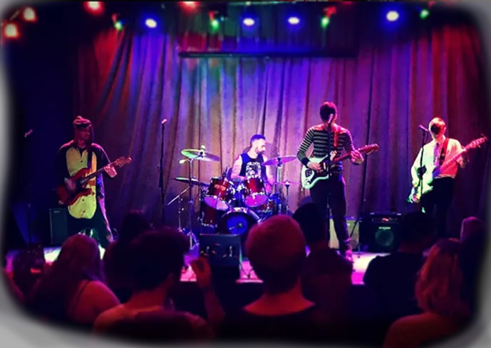
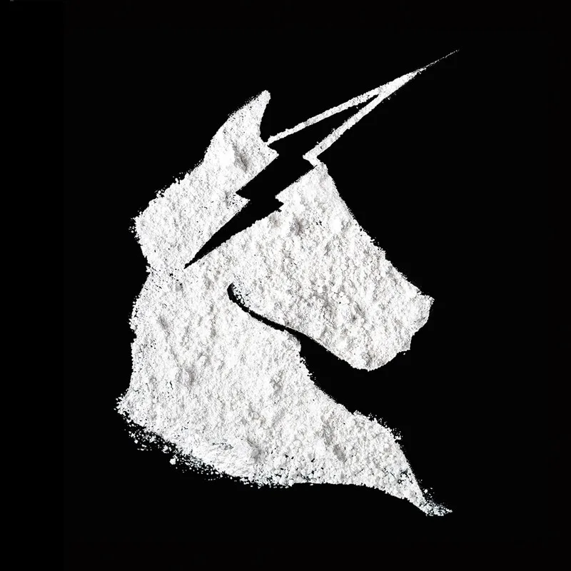
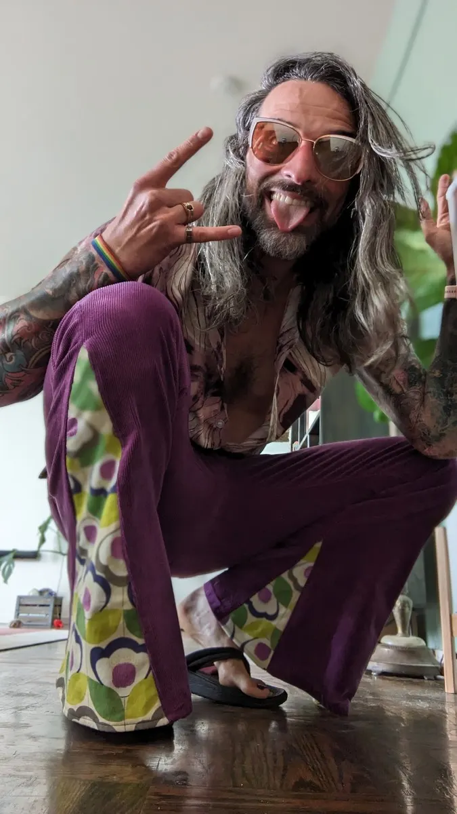

Unicornicopia is a Bay Area rock band who drink a lot of whiskey and quote
Wayne's World too much.
Our first studio album, Smell No Evil, is out now. We're on a semi-permanent
hiatus from the stage, so bar gigs, state fairs, farmers markets, and bar
mitzvahs will have to live without us for a while.
For more information see the links (above). Socials below (duh).
Smell No Evil is out

Eight tracks of whiskey-fueled grunge — including Shoulder, which
showed up in
Dispatch
(the game from
AdHoc Studio).
Listen:
Unicornicopia is...
Cubic Zirconia Cole Musselman
Big Gulps, huh guys? This sexy Jim Carrey lookalike is Cole "Muscle
Man" Musselman. The baddest frontman on the planet for the world's
most dangerous band. All the shine of diamond at a fraction of the
price. Handling vocals, guitar, and more than his fair share of
groupies. The Coleman Cometh!

Cautious Chris Rebbert
It's not just a clever name — Cautious Chrissy is a huge Sissy, but
he sure can play those drums. Don't let those long, wild locks and
sleeves of tattoos fool you, this guy's got a fluffy Pomeranian at
home and spends most of his time reading and writing like a nerd.
Luckily this lanky Looney Tune has enough rock and roll vices and
talent on the skins to round out the band.
Theo the Thunder Spielman
Hailing from parts unknown with a pedalboard so big and solos so
electric you'd swear he just slapped some strings on Mjolnir itself.
Even if that's not the case, you can be sure that if Mjolnir was a
guitar, this kooky kid would certainly be worthy of wielding it. And
who doesn't love it when he whips out those fun little soundbites on
stage? Where does he get those wonderful toys?
semi-permanent hiatus
No upcoming shows. We're not broken up, and we're not teasing a comeback.
The world's most dangerous band is just... parked.
Smell No Evil is out if you want Unicornicopia in your ears. If we ever plug
back in, this page will stop looking so calm.